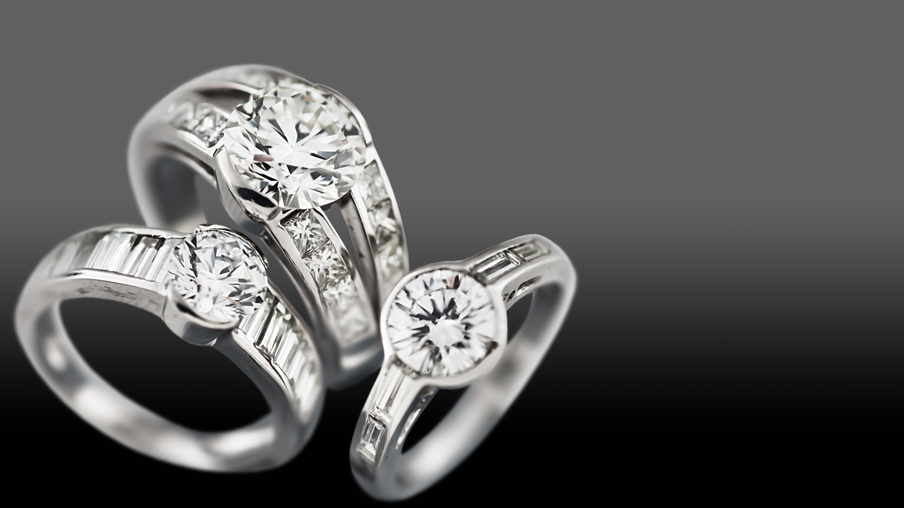

Visión
La joyería Orfi ubicada en el barrio San Cristóbal en Bogotá, se dedica a la fabricación y venta de joyas producidas en metales finos como son plata y oro; se destaca la fabricación de anillos, pulseras, cadenas, argollas y pendientes. Además de esto comercializa relojes de pulsera.
En la actualidad la joyería carece de un control de producción respecto a materia prima y stock de productos. Una de las mayores dificultades evidenciadas, se presenta en la comunicación con el cliente en los trabajos por encargo, siendo ésta la venta más representativa, se requiere de un canal que facilite la comunicación y que arroje una proyección de tiempos de fabricación; permitiendo al cliente la toma de decisiones para realizar cambios con base en fechas de cierre de procesos para la aplicación de los mismos.
En cuanto a los procesos administrativos el sistema de seguimiento de ventas se realiza de forma manual, de manera que se presentan inconsistencias, además de no contar con indicadores de ventas y productividad.
